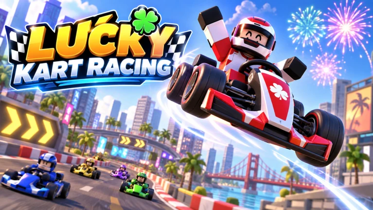

ROBLOX · KART RACING
LUCKY
KARTRACING
Build with luck.
Race with skill.
Assemble your kart, time your launch and charge your boost. Welcome to the official home of Lucky Kart Racing.
Roblox currently lists Ages 16+. Read parent information.

01 / THE GAME
Your kart.
Your racing line.
Lucky Kart Racing is a kart racing game on Roblox with kart assembly, AI practice and races for up to 4 players across city, desert and tundra courses.
Collect chassis, engines and tires, upgrade your build and customize its paint. The game description lists six courses across these three settings. Practice against AI, then join a multiplayer race.
- Platform / genre
- Roblox / Kart racing
- Race modes
- AI practice · Up to 4 players
- Course settings
- City · Desert · Tundra
- Listed controls
- PC keyboard · Mobile screen
Gameplay details are based on the developer’s Roblox description, reviewed . Device performance and race duration have not been tested for this website.
02 / HOW TO PLAY
Build. Line up. Boost.
A guide from the game’s published description.
Assemble your kart.
Combine chassis, engine and tire parts. Upgrade them step by step and choose your paint.
Nail the launch.
Time your start and steer along the centre of your lane to charge boosts.
Watch the edges.
Use your boost on the way to the finish. Hitting the track edge can send your kart flying with fireworks.
PC / KEYBOARD
- W / ↑
- Accelerate
- A / D
- Steer
- ← / →
- Boost
- C
- Camera
MOBILE / TOUCH
Use on-screen controls.
Mobile controls are listed by the developer. Individual phones and tablets have not yet been tested for this website.
Actual gameplay screenshots and a video will be added here. The image above is promotional artwork.
03 / BEHIND THE GAME
A young creator’s story.
The story behind Lucky Kart will be added after the creator’s role and the wording have been confirmed by a parent or guardian.
This space will focus on ideas and the making of the game.
04 / FOR PARENTS & CARERS
Know before you play.
Clear information for a considered choice.
Current Roblox listing: Minimal content maturity · Ages 16+.
The Korean-language listing displayed “수위: 최소 · 나이 16세 이상” when reviewed on . Content maturity and audience access are separate: a Minimal label alone does not mean a game is available to all ages. Check the current game listing and your child’s account settings before play. Roblox explains its audience requirements here.
| Topic | What we can confirm |
|---|---|
| Content maturity & age access | The listing shows Minimal and Ages 16+. Access can change; refer to the current listing and account settings. This website does not make an independent age-suitability recommendation. |
| Collisions & other content | The description mentions karts flying off track edges and fireworks. A full in-game content review is still pending. |
| Chat, voice & social features | The public listing marks voice chat and camera as “Not Supported”. Text chat and other social settings have not been verified. The description lists up to 4 racers; Roblox lists a server size of 8. |
| Entry price & in-game purchases | Free access, passes and purchase options are not yet verified. |
| Game data & external links | Game-specific data use and external links have not yet been reviewed. |
| This website | No accounts, forms, analytics scripts or embedded third-party media. Hosting and linked services may process connection data. |
05 / QUESTIONS & ANSWERS
Good questions.
Clear answers.
What is Lucky Kart Racing?
Lucky Kart Racing, also called Lucky Kart on this website, is a Roblox kart racing game. Assemble and upgrade your kart, charge boosts by staying centred, and race through city, desert and tundra courses.
Where can I play Lucky Kart Racing?
Open the official Lucky Kart Racing game page on Roblox. Roblox manages access through your account. Check its current age-access information before play.
Can I practise alone or race with friends?
The developer’s description lists AI practice and races with up to 4 players. The server size shown by Roblox is 8; that is separate from the stated number of racers.
Is Lucky Kart suitable for young children?
The Roblox listing showed Minimal content maturity and Ages 16+ on 15 September 2026. Minimal does not by itself establish access for younger children. Review the parent information and current Roblox settings; this website does not make an independent age recommendation.
Is Lucky Kart free to play?
The entry price and any in-game purchases have not yet been verified.
Does Lucky Kart have chat or collisions?
The listing marks voice chat and camera as not supported. Text chat remains unverified. The description includes karts flying off the track and fireworks; a full content review is pending.
Which devices and controls does it support?
The description lists PC controls: W or Up to accelerate, A/D to steer, Left/Right to boost and C for the camera. Mobile uses on-screen controls. Specific devices, controller support and performance still need testing.
06 / SITE NOTES
Ready to explore?
Added the official Roblox link, promotional artwork, published game features, controls and current parent information. Gameplay captures and a creator story are still pending.
View Lucky Kart Racing